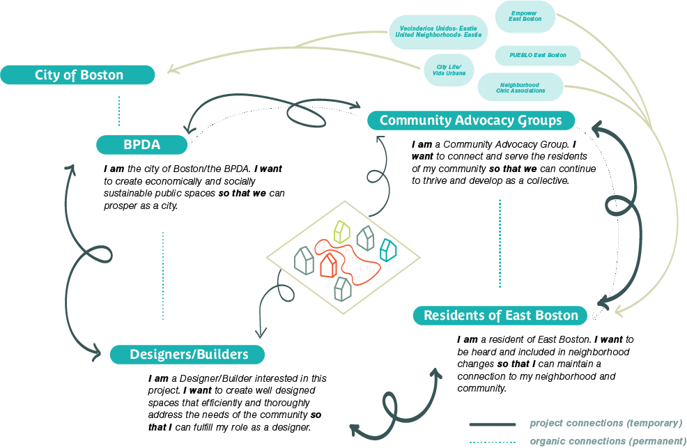
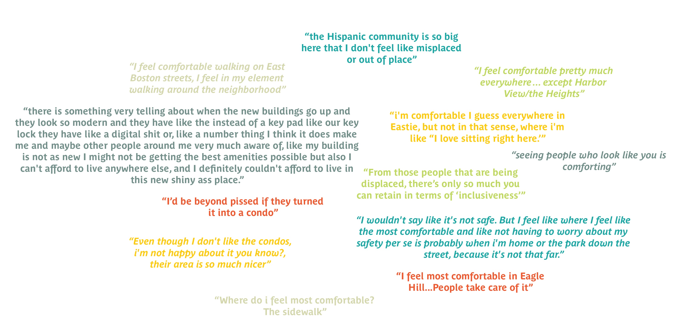

A primary part of my community engagement strategy consists of a series of resident interviews. This longitudinal qualitative study allows for nurturing a working relationship with the community, through which a deeper and more holistic understanding of the neighborhood and the physical needs of the space can be achieved. The sample population was gathered through both purposive and snowball sampling methods, and has the potential to expand for future interviews. There are some limitations to this study, as the sample population is not varied enough in terms of age, leading to a potentially skewed perspective of the topics analyzed in this project. In an attempt to mitigate these limitations, residents are being asked to consider family/friends of different identities when answering some questions. The current group consists of 4 female identifying residents and 2 male identifying residents, with half of the residents being long-term/lifetime members of the community and half being fairly new to the Eastie community. Most are Latinx-identifying, which is in line with the demographic data of the neighborhood.
In the initial interview, the residents were asked to reflect on and share their experiences with local open/public spaces. They shared their favorite parts of the existing infrastructure, potential changes, and identified points of improvement as well as pride within the open space network. Finally, residents were asked to reflect on how their neighborhood affected their idea of comfort and belonging, and shared specific spaces or situations in which these ideas were most impactful to them, both positively and negatively.
